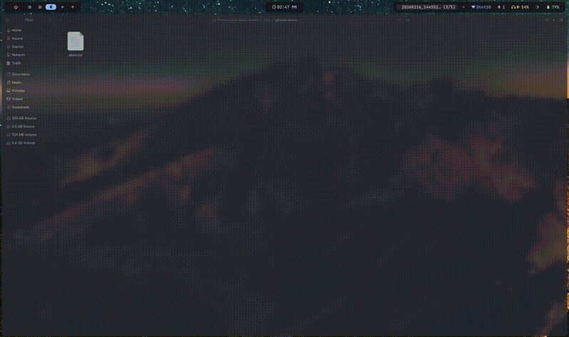

A file clipboard for Wayland. Watches directories for new files and pops up a widget in Waybar. Click to open a dropdown with actions: drag and drop, open, edit, or copy the path. Written in Rust.

# from crates.io cargo install wayglance # from source git clone https://github.com/areofyl/glance cd glance cargo build --release cp target/release/glance ~/.local/bin/ # then run the setup wizard glance init
The setup wizard creates the config, adds the Waybar module, appends CSS, and sets up autostart. Restart Waybar and you're done.
glance init # setup everything glance watch # run the file watcher glance status # JSON for waybar glance menu # dropdown with actions glance copy # copy file path glance drag # drag and drop overlay glance scroll up|down # navigate file history
Optional config at ~/.config/glance/config.toml. Set which directories to watch, auto-dismiss timeout, which buttons show up in the dropdown, drag command (builtin GTK4 or something like ripdrag for XWayland browsers), and the menu appearance.